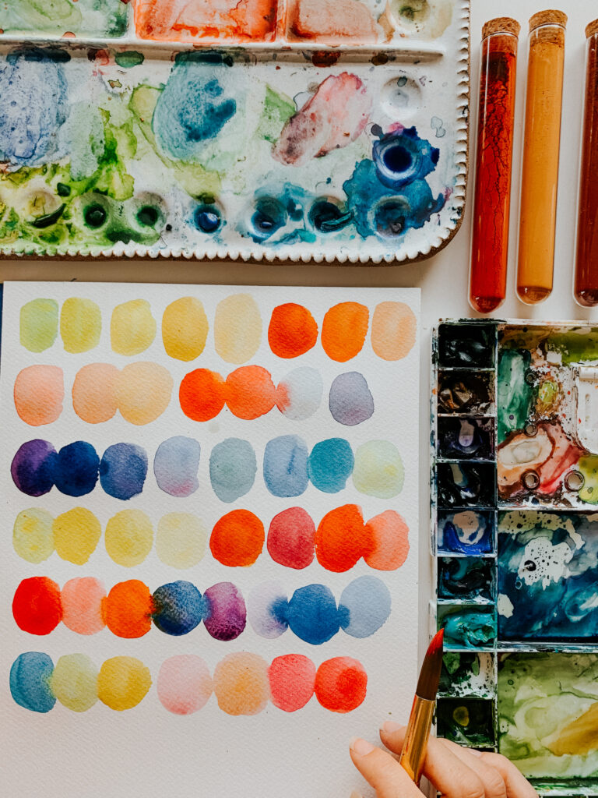
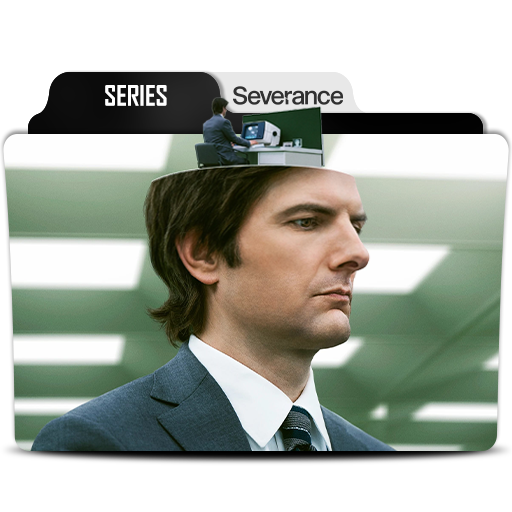
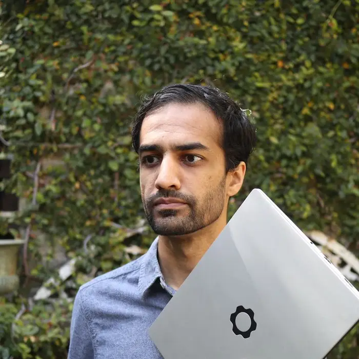

Team Members
Josie Vogel, Raneem Yasin, and Plangkat Rinkam
Josie Vogel
Hi everyone, my name is Josie and I'm a junior majoring in Information Science with a certificate in Data Science. Some of my hobbies are playing soccer, watercolor painting, and working with an organization called Philos health. Some of the projects I've been working on recently explore the intersection of education and AI tools for multilingual learners. If you're interested in something similar, feel free to reach out! I took this class hoping to learn more about how different identities have been promoted or hidden in the creation of the tech industry. I am from Silicon Valley so learning about the beginnings of the tech industry has been very interesting and informative.


Plangkat Rinkam
Hello everyone, my name is Plangkat. I am a senior studying Computer Science and Information Science. I love to play soccer, watch tv, and play video games. I took this class hoping to deepen my understanding on how different identities have been involved throughout the development of the tech industry. My favorite "tech thing" is the smartphone. My personal tech hero is Nirav Patel, the CEO of Framework.


